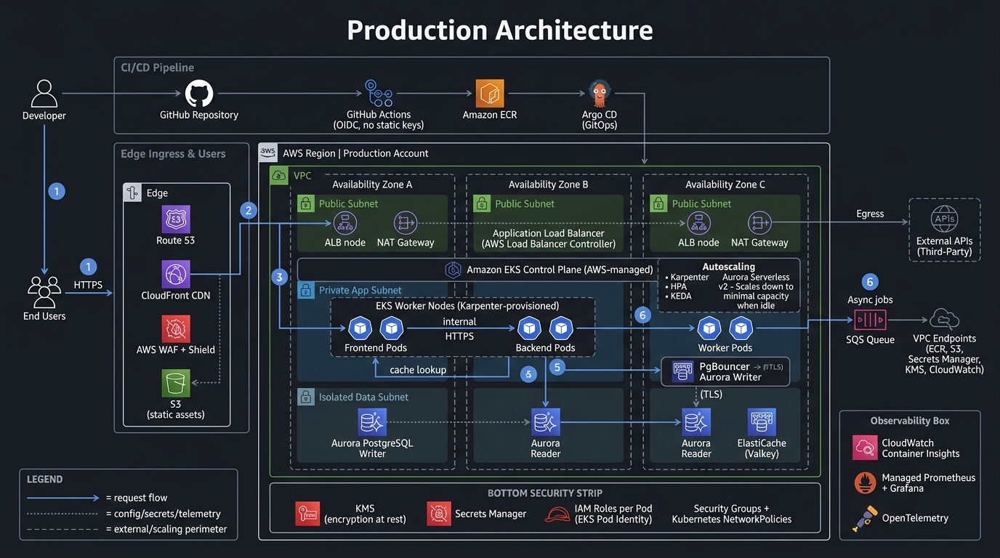

AMAZON WEB SERVICES (AWS)
EKS TOURNAMENT PLATFORM
3-TIER MULTI-AZ
Take & Trade Naija — Tournament EKS Architecture
Production-grade multi-AZ architecture deployed on Amazon EKS for Take & Trade's high-stakes trading tournament. Engineered to handle traffic surges from multiple concurrent users during live tournament rounds, featuring rapid Karpenter node provisioning and automated downscaling to minimal capacity when idle to optimize infrastructure costs.
Edge & Ingress:
Route 53 DNS, CloudFront CDN, AWS WAF + Shield, and S3 static storage routing traffic to multi-AZ Application Load Balancers (ALB).
Tournament Autoscaling:
Amazon EKS with Karpenter (Spot + On-Demand node provisioning), HPA pod scaling, and KEDA queue-based scaling that scales down to minimal capacity when idle.
Data & Caching Tier:
Multi-AZ Aurora PostgreSQL Serverless v2 (Writer + Readers) with PgBouncer connection pooling and ElastiCache (Valkey) low-latency cache for real-time leaderboards.
Security & GitOps CI/CD:
Developer → GitHub Actions (keyless OIDC) → ECR → Argo CD GitOps into EKS; AWS KMS, Secrets Manager, and IAM Roles per Pod.
AWS EKS
Karpenter
Aurora PostgreSQL
ElastiCache (Valkey)
PgBouncer
Argo CD
GitHub Actions OIDC
AWS WAF
Tournament Autoscaling